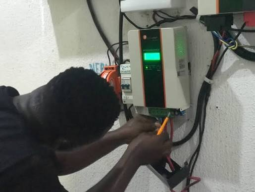
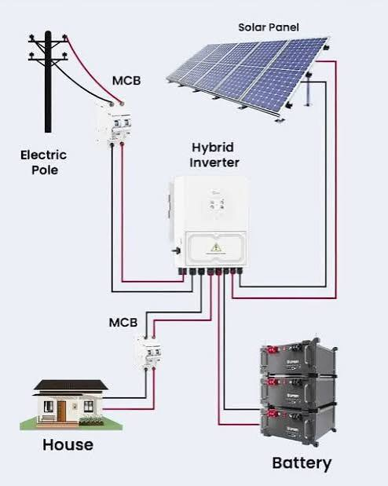
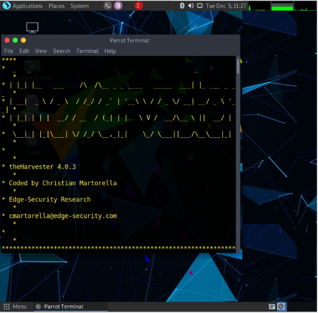
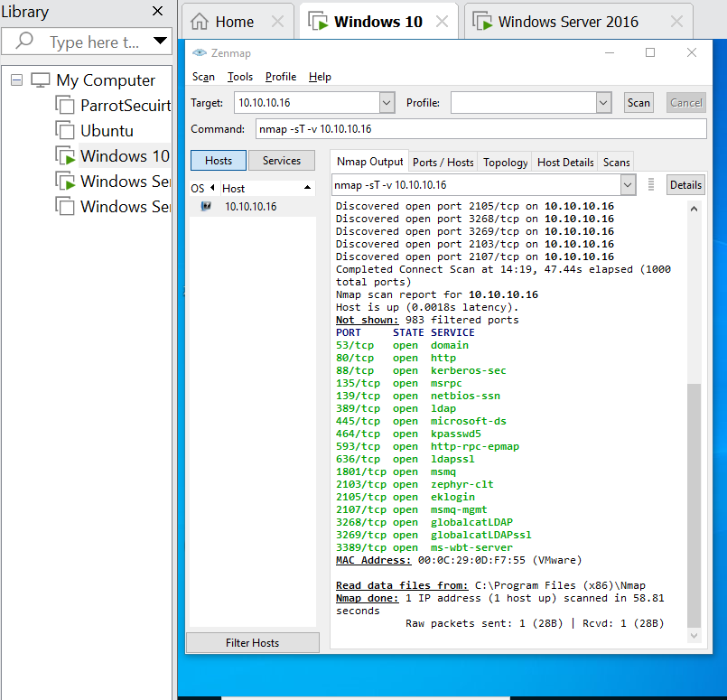
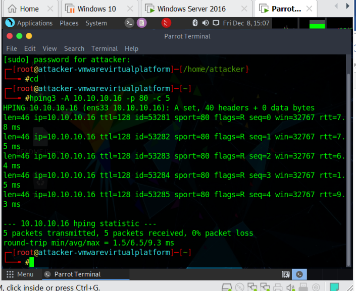
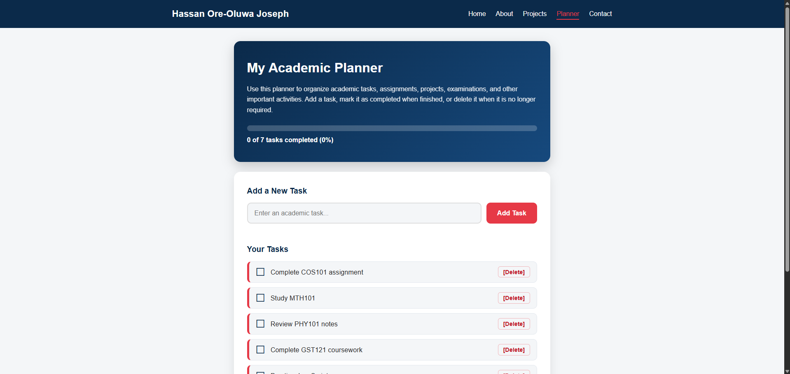

Student Portfolio Website
A responsive multi-page website built with HTML, CSS and JavaScript to show my profile, skills and projects. It includes a validated contact form and works on phones and computers.
View ProjectA selection of technical work that shows my skills in technology, hardware and web development.
This project explains the principles, guidelines and best practices for installing a solar inverter system safely and efficiently. It was carried out for the Department of Computer Science, to reduce the effect of frequent power outages and the noise and air pollution from standby generators.


A hands-on ethical hacking lab covering how information about a target can be found using search engines, online tools and network scanners. Each task was carried out and documented with screenshots.



A responsive multi-page website built with HTML, CSS and JavaScript to show my profile, skills and projects. It includes a validated contact form and works on phones and computers.
View Project
An interactive task manager for students. Users can add tasks, mark them as completed and delete them, with a progress bar that updates as tasks are finished.
View Project